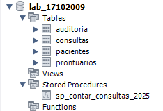
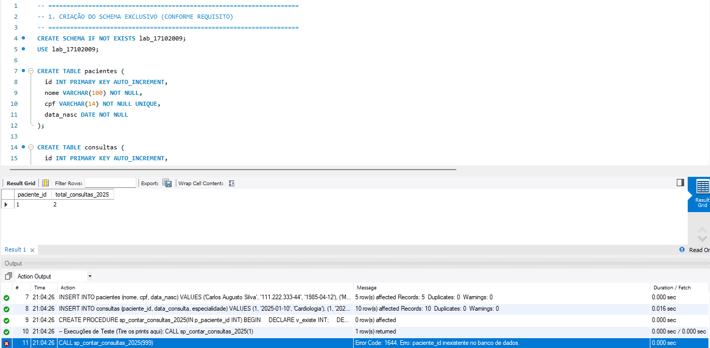
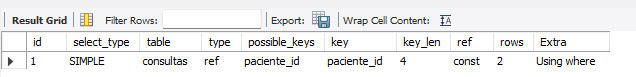
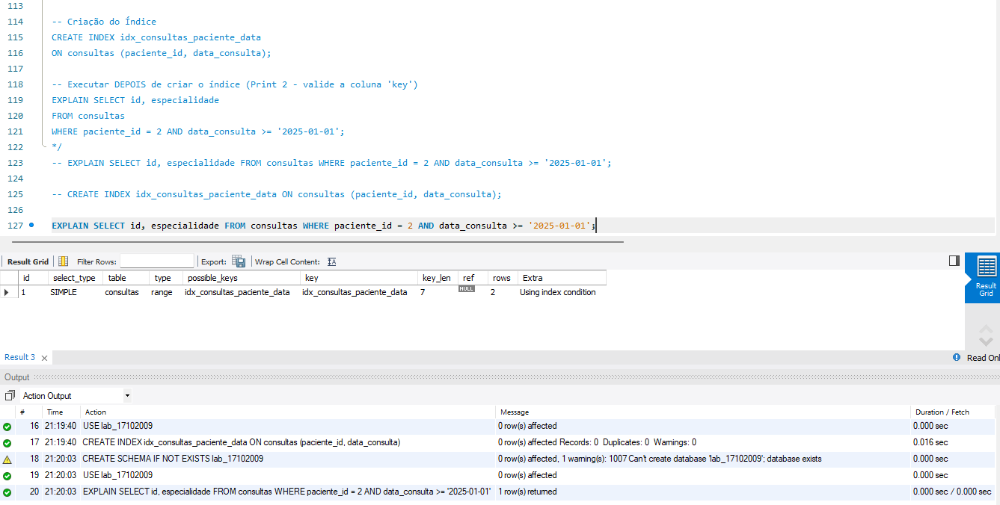

Criação do schema e das 4 tabelas obrigatórias (pacientes, consultas, prontuarios, auditoria) com integridade referencial.

Validação da regra de negócio com uso de cursor e disparo de exceção controlada via SIGNAL SQLSTATE '45000' ao tentar consultar IDs inválidos.

Análise de desempenho da busca filtrando por paciente_id e por faixa de data_consulta.
O otimizador usou a FK padrão ou realizou uma verificação genérica.

O MySQL passou a realizar a busca diretamente pela chave otimizada combinada.

A otimização foi executada com êxito total. No segundo comando EXPLAIN, a coluna key passou a apontar diretamente para a nossa chave composta criada (idx_consultas_paciente_data). Isso reduz o desperdício de varredura no disco e deixa a aplicação pronta para escalar com milhões de registros clínico-hospitalares.